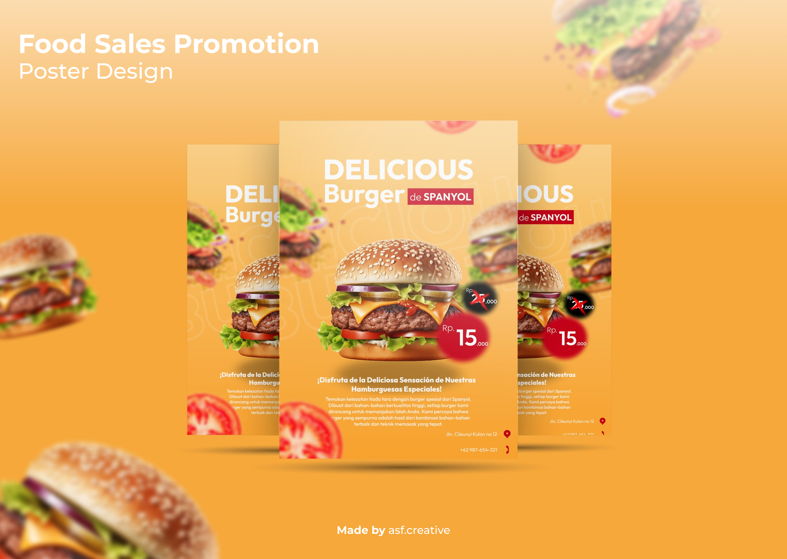
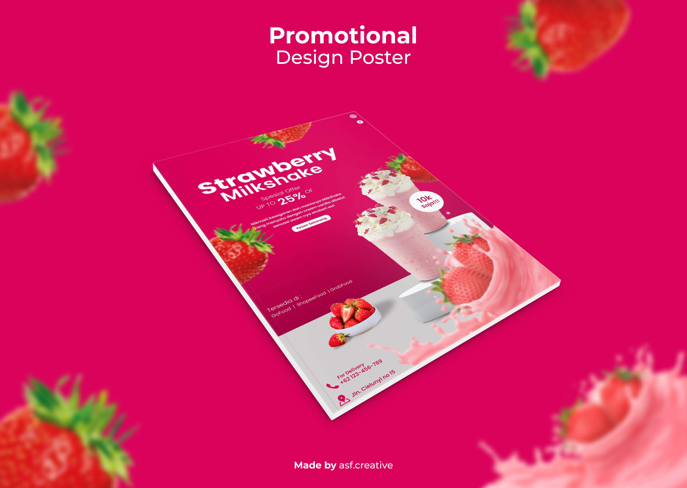
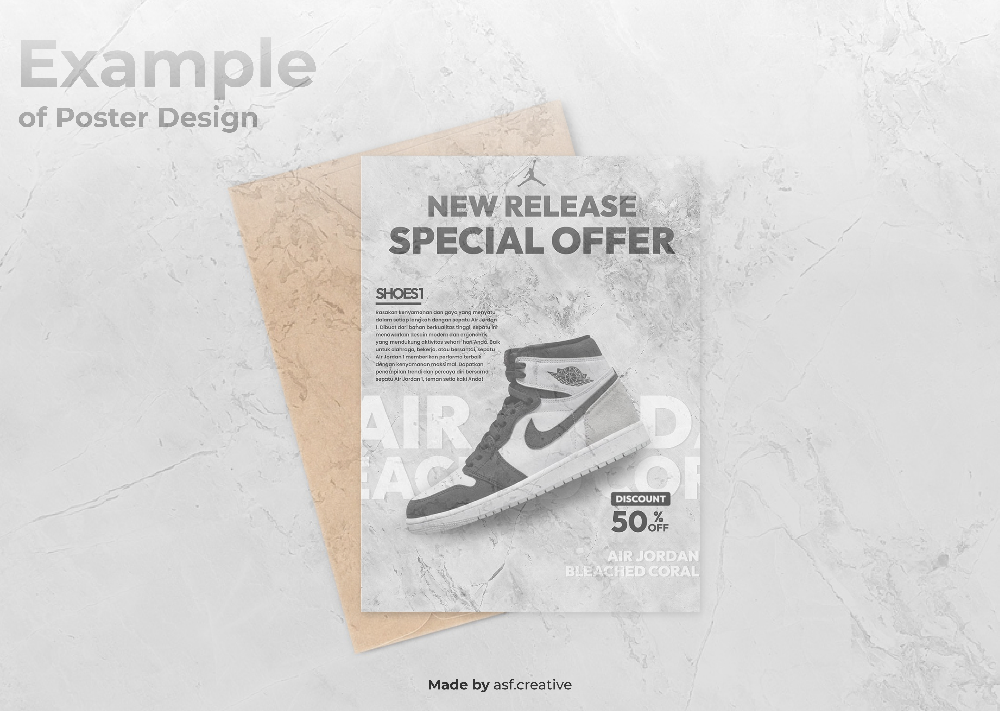

Merancang poster promosi dengan berbagai tema dan menggunakan visual/style modern.



Klien
Mahasiswa
Jenis
Joki Tugas Kuliah
Tahun
2023
Tools
Figma
Proyek ini berfokus pada versatilitas desain promosi komersial (Promotional Design Poster) yang disesuaikan secara spesifik dengan psikologi konsumen dari masing-masing industri, mulai dari Food & Beverage (F&B) hingga Fashion/Streetwear.
1. F&B Pendekatan Dinamis (Poster Minuman & Burger): Untuk menonjolkan daya tarik produk makanan, saya menerapkan komposisi dinamis menggunakan teknik floating objects (elemen bahan yang melayang) dan efek liquid splash (cipratan air) untuk memberikan kesan segar, hidup, dan menggugah selera. Pemilihan palet warna gradien bernada cerah (merah muda segar dan oranye hangat) bertujuan memancing appetite (selera) secara visual, dipadukan dengan tipografi sans-serif tebal agar hierarki informasi seperti label diskon (25% OFF) dan harga langsung tertangkap oleh mata.
2. Urban & Edgy Style (Poster Sneakers): Kontras dengan gaya F&B yang berwarna, desain promosi sepatu (Air Jordan) mengadopsi pendekatan urban grunge. Penggunaan latar belakang bertekstur (seperti lipatan kertas/beton) dengan palet warna monokromatik memberikan kesan streetwear yang eksklusif dan raw. Tata letak produk yang diposisikan secara diagonal menciptakan ilusi pergerakan, memperkuat pesan "New Release" dengan karakter yang kuat